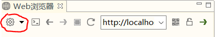

https://blog.csdn.net/qing666888/article/details/81914389
安装并配置好Xampp后，在Hbuilder中下载php插件，工具→插件安装
打开边看边改模式，设置外部服务器

点击外部服务器，新建
服务器名称与刚刚创建的名称一致
指定打开php类文件的服务器为我们刚刚新建的服务器
在html跳转到php页面时，使用的是内部服务器的端口，当内外服务器端口不一致时，就会显示空白页面。遇到空白页面问题，修改内部服务器的端口与外部服务器一致。